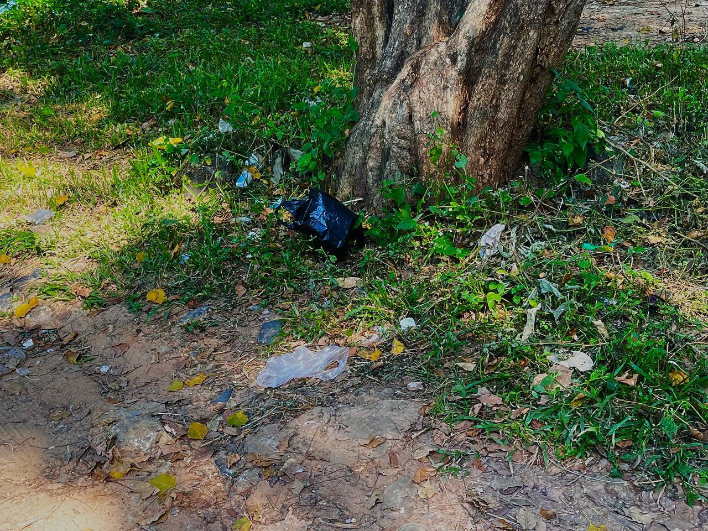
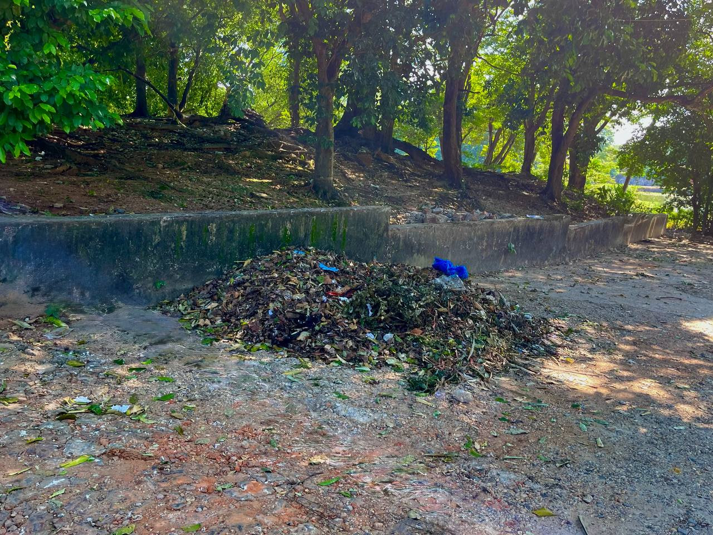

- Visible garbage dumped in natural areas
- Pollutes soil and water resources
- Attracts pests and creates unpleasant odors
- Reduces the aesthetic value of the park
- Indicates lack of proper waste management behavior

- Waste scattered near tree areas
- Affects soil quality and plant growth
- Creates hazards for small animals
- Reduces biodiversity in the park
- Shows a lack of awareness among visitors

- Evidence of organized cleanup activities
- Removes harmful waste from the environment
- Encourages community participation
- Improves the appearance and safety of the park
- Supports long-term sustainability